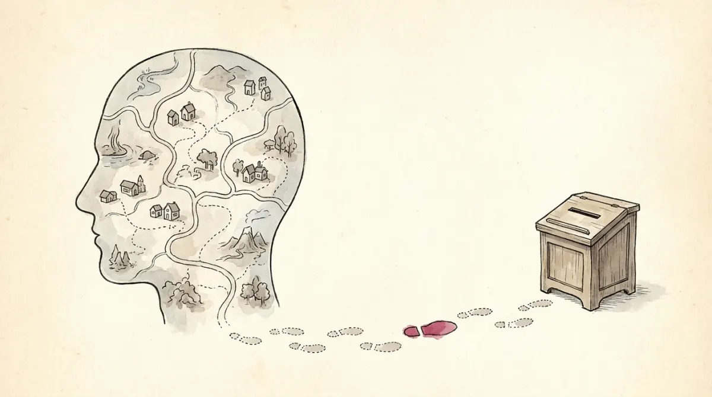

Two neighbors at Via Larga 12. Anna believes taxes are theft, distrusts every party, and calls herself conservative: you cannot see any of it. On Sunday she votes, and that you can see. The invisible furniture is political attitudes: internal mental states, beliefs, opinions, values, and feelings a person holds about political objects (parties, leaders, policies, ideologies). The visible acts are political behaviour: voting or abstaining, joining a party, protesting, signing, donating. An inner map, and the footprints it leaves.
One course subtlety worth two exam points: behaviour includes inactivity. Staying home on election day is political behaviour, readable like any footprint, and section 8 reads it carefully.
Zoom out from one head to a whole country's, and patterns appear: political culture is the shared pattern of attitudes, values, and beliefs about politics, explicit and implicit, a country's collective map of how people think and feel about power. Gabriel Almond's definition, the citable one: "the particular pattern of orientations toward political actions and institutions in which every political system is embedded." Culture and institutions are mutually dependent: they can fit (Poli-05's constitutions working as written) or mismatch (rulebooks nobody follows: Chile's lesson, seen from the culture side).
Why it earns its place on the exam: shared values predict the big outcomes: compliance versus protest, trust in others and in institutions (Poli-13's whole subject), participation versus disengagement, and even democratization versus autocratization. And culture is a moving target: nationalism, populism, racism, nativism are all live shifts on the map, not museum pieces.
The classic study (Civic Culture, 1963) asked which cultures sustain stable democracy, and sorted them by how citizens relate to the system:
| Parochial | Citizens barely perceive the national political system at all: politics is the village, the clan, the parish. No expectations toward the state. |
|---|---|
| Subject | Citizens perceive the state's output side (taxes, services, orders) and comply, but see no role for their own voice: the state acts on you. |
| Participant | Citizens see themselves as actors: informed, opinionated, engaged, inclined to push on the input side. |
| Civic | The prize: a mix of subject and participant: citizens active enough to demand, trusting enough to delegate, paired with responsive elites. Almond & Verba's verdict: the best culture for stable democracy. |
The tempting wrong answer is always "pure participant culture is best for democracy". The finding is subtler: a purely activist citizenry overloads the system; the civic blend (participation plus trust plus delegation) is the winner. Distrust-everything activism is not the democratic ideal; Poli-13 makes the same point with skepticism versus cynicism.
Samuel Huntington proposed classifying political cultures by civilisations, blocks built from history and geography (Western, Islamic, Slavic-Orthodox, Hindu, Japanese, Latin American, Chinese, African), and predicted that the dominant conflicts of the future would run along the fault lines between them. The slides quote his 1990s Ukraine passages at length: the boundary of Western Christianity cutting through Ukraine, the prediction that the civilizational line would be a place of "crisis and bloodshed". With Crimea and the Donbas, the slides note, confrontation did erupt exactly there.
Handle with the course's own care: Huntington is presented as influential and contested. Critics answer that civilisations are not homogeneous actors, that the theory flattens internal diversity, and that a prediction fitting one case is not a law. For the exam: know the thesis, know the Ukraine illustration, and know it is a debate, not a settled fact.
Three inks draw every inner map, and the course insists they interact rather than compete:
A country contains endless differences: left-handed versus right-handed, mountain versus coast, rich versus poor. Only some become political cleavages, and the course gives the three-part test. A difference becomes a cleavage only when: it is socially important and widely recognized, people hold subjective awareness of belonging to its sides, and the sides find political organization (parties, unions, movements carrying the flag). No organization, no cleavage: just a demographic.
The dangerous configuration is reinforcing cleavages: when language, wealth, religion, and geography all cut along the same line, every conflict stacks onto one divide. The slides' case is Belgium: language, culture, wealth distribution, representation, and geography aligned, producing chronic political instability. Cross-cutting cleavages, where your language group and your income group pull you into different coalitions, dilute conflict instead. Poli-09 shows parties being born from exactly these lines.
One live shift on the map gets its own slide and definition, Cas Mudde's: nativism is xenophobic nationalism: "an ideology that wants congruence of state and nation, one state for every nation and one nation for every state, perceiving all non-natives, people and ideas alike, as threatening." It is a view of how the state should be structured, it belongs to the broader family of right-wing populism (the virtuous people against a corrupt elite: Poli-11 dissects that machinery), and it appeals most when people feel the harmony between state and nation is slipping away. Note the reach of the definition: not only foreign people, foreign ideas count as threats too.
Now read the footprints honestly, as the course does: most people are not politically active. The vocabulary of non-participation: marginality (no resources to engage), alienation (estrangement: the system is not for people like me), loss of salience (politics stopped mattering to my life), apathy (simple indifference). Different diagnoses, same empty square, different cures.
Who does show up follows two stubborn correlates: socio-economic status (education above all) and age (middle-aged activism peaks; the young protest more and vote less). And the whole pattern is in motion: economic crises, globalisation, declining political trust, identity politics, and technology keep redrawing maps, with the aggregate drift the course names from optimism to pessimism, toward polarisation and populism: the bridge on which Poli-11 and Poli-13 stand.
Attitude, behaviour, or culture concept? The reflex:
| Attitudes | internal states: beliefs, opinions, values, feelings about political objects |
| Behaviour | observable actions, including inactivity: voting, abstaining, joining, protesting, donating |
| Political culture | shared pattern of orientations toward politics (Almond); mutually dependent with institutions (fit vs mismatch) |
| Almond & Verba | parochial · subject · participant · CIVIC (subject + participant mix) = best for stable democracy |
| Huntington | cultures as civilisations; conflict along fault lines; Ukraine as the quoted case; influential AND contested |
| Three inks | material interests · political identity · socialisation (hence patterned, slow-changing cultures) |
| Cleavage test | socially recognized + subjective awareness + political organization; reinforcing cleavages (Belgium) = instability |
| Nativism (Mudde) | xenophobic nationalism: one state per nation, non-natives (people AND ideas) as threats; kin of right-wing populism |
| Non-participation | marginality · alienation · loss of salience · apathy; participation tracks SES and (middle) age |
Maps drawn in three inks, footprints mostly absent, and the fault lines where the maps collide.
Six questions in the written test's style.